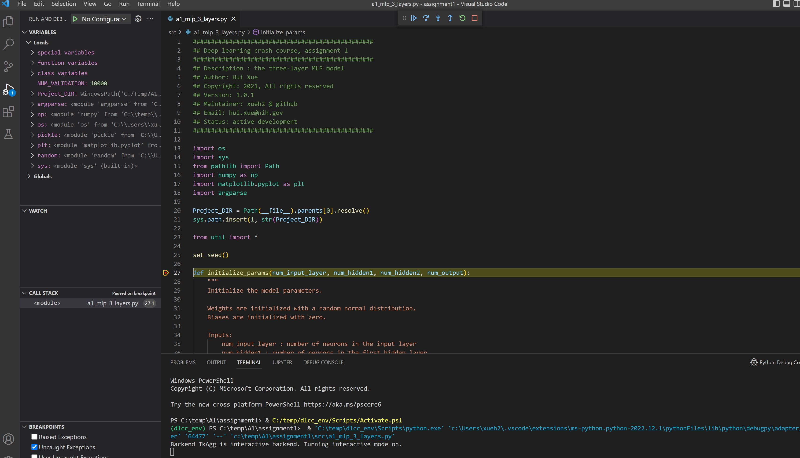

Setup for deep learning development, NHLBI
This guideline provides tutorial for how to set up deep learning development environment for the NHLBI internal setup. Due to the limitation of NIH network, we will focus on setting up the NHLBI windows computers.
Install NVIDIA driver and CUDA, if your computer has a GPU
-
Download the CUDA installer for windows
-
Double click cuda_11.6.2_511.65_windows.exe
-
Follow on-screen prompts
Install python and pip
- Download the python 3.8 installer
- Unzip and double click
- Use all default values and install this package
Install python pip
cd c:\temp
curl https://bootstrap.pypa.io/get-pip.py -o get-pip.py
python get-pip.py
If you get this error:

it can be fixed by:
- Go to windows run. Type %appdata%
- Go to the folder pip and edit the pip.ini file.
- If the folder doesn't exist create one and also create a pip.ini file and edit in a text editor.
- Add the following :
[global] trusted-host = pypi.python.org pypi.org files.pythonhosted.org raw.githubusercontent.com github.com download.pytorch.org
Install vscode
Go to VSCode page and download and install this software for windows 64 bit.
Create python virtual environment
First, open the windows power-shell

Then, create python virtual environment:
cd c:\temp
python -m venv dlcc_env
Activate the dlcc_env. In the power-shell, run:
.\dlcc_env\Scripts\activate
Install the required packages:
- Download https://deeplearningcrashcourse.org/setup/requirements.txt and save it into c:\temp\requirements.txt
pip install -r .\requirements.txt
Use vscode in the virtual environment
Download the assignment 1 from:
https://gadgetrondata.blob.core.windows.net/dlcc/assignment1.zip
Save it into e.g. c:\temp\A1 and unzip the package
Then use the vscode to open the assignment 1:
code .\A1\assignment1\
One extra step we need to do is to let vscode use the virtual environment:
Click "View", then "Command and Palette", then type "Python: Select Interpreter", then select the one for dlcc_env (last one in the list here):

After this, you can start debug/code up the assignment source files:

Pytorch with GPU
By default, the cpu version of pytorch was installed. If you have gpu setup, you may want to uninstall cpu version and install GPU pytorch:
# in the dlcc_env
pip uninstall torch torchvision torchaudio
# install gpu version
pip install torch torchvision torchaudio --extra-index-url https://download.pytorch.org/whl/cu116